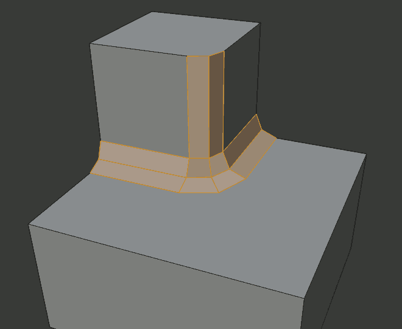
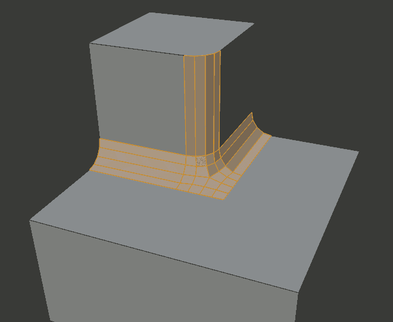

Bevel¶
Reference
| Mode: | Edit Mode |
|---|---|
| Menu: | |
| Hotkey: | Ctrl-B |
| Menu: | (vertex-only) |
| Hotkey: | Shift-Ctrl-B (vertex-only) |
The Bevel tool allows you to create chamfered or rounded corners on geometry. A bevel is an effect that smooths out edges and corners.
True world edges are very seldom exactly sharp. Not even a knife blade edge can be considered perfectly sharp. Most edges are intentionally beveled for mechanical and practical reasons.
Bevels are also useful for giving realism to non-organic models. In the real world, the blunt edges on objects catch the light and change the shading around the edges. This gives a solid, realistic look, as opposed to un-beveled objects which can look too perfect.

Cubes with and without bevel.
Usage¶
The Bevel Edges tool works only on selected edges with exactly two adjacent faces. It will recognize any edges included in a vertex or face selection as well, and perform the bevel the same as if those edges were explicitly selected. In “vertex only” mode, the Bevel Vertices tool works on selected vertices instead of edges, and there is no requirement about having any adjacent faces. The Bevel tool smooths the edges and/or “corners” (vertices) by replacing them with faces making smooth profiles with a specified number of segments (see the options below for details about the bevel algorithm).
Use Ctrl-B or a method listed above to run the tool. Move the mouse to interactively or type a number to specify the bevel offset, and scroll the Wheel to increase or decrease the number of segments (see below).

Selected edge before beveling. |

Result of bevel (one segment). |

Result of bevel (vertex only). |
Note
Normal (edge) beveling only works on edges that have exactly two faces attached to them. Vertex beveling has no such restriction.
Options¶
- Amount A
- You can change the bevel amount by moving the mouse towards and away from the object, a bit like with transform tools. The exact meaning of the value depends on the Amount Type option (see below). As usual, the scaling can be controlled to a finer degree by holding Shift to scale in 0.001 steps. LMB finalizes the operation, RMB or Esc aborts the action.
- Amount Type M
Selects how the Amount value controls the size of the bevel. According to the selection, the amount is:
- Offset
- The distance of a new edge from the original.
- Width
- The width of the bevel face.
- Depth
- The perpendicular distance from the original edge to the bevel face.
- Percent
- The percentage of the length of adjacent edges that the new edges slide.
For vertex-only bevels, the Offset and Depth types measure from the original vertex, and the Width type is measured from a new vertex to the center of the new face (as half the amount).
- Segments S
The number of segments in the bevel can be defined by scrolling the mouse Wheel to increase or decrease this value. The greater the number of segments, the smoother the bevel. Or press S to change the number with mouse movements, as well as numeric input.
Alternatively, you can manually enter a segment number value while using the tool, or in the Mesh Tool options panel after using the tool.

Bevel with four segments.
- Profile P
- This is a number between 0 and 1 that controls the shape of the profile (side view of a beveled edge). The default value, 0.5, gives a circular arc (if the faces meet at right angles). Values less than that give a flatter profile, with 0.25 being exactly flat, and values less than that giving a concave bevel. Values more than 0.5 give a more convex profile. Similarly as Segments it can be set with mouse movements and numeric input after toggling P.
- Vertex Only V
- When selected, the tool is in “vertex only” mode, and only vertices will be beveled.
- Clamp Overlap C
- Limits the width of each beveled edge so that edges cannot cause overlapping intersections with other geometry.
- Loop Slide
- If there are unbeveled edges along with beveled edges into a vertex, the bevel tries to slide along those edges when possible. Turning the option off can lead to more even bevel widths.
- Mark Seams U
- If a seam edge crosses a non-seam one and you bevel all of them, this option will maintain the expected propagation of seams.
- Mark Sharp K
- Similar to Mark Seams, but for sharp edges.
- Material
- The Material number specifies which material should be assigned to the new faces created by the Bevel tool. With the default, -1, the material is inherited from the closest existing face (“closest” can be a bit ambiguous). Otherwise, the number is the slot index of the material to use for all newly created faces.
- Harden Normals H
- When enabled, the per-vertex face normals of the bevel faces are adjusted to match the surrounding faces, and the normals of the surrounding faces are not affected. This will keep the surrounding faces flat (if they were before), with the bevel faces shading smoothly into them. For this effect to work, custom split normals need to be enabled, which requires Auto Smooth to be enabled (see Normals). As a convenience, that option will be enabled for you if it is not already when you enable Harden Normals here.
- Face Strength Mode
Set Face Strength on the faces involved in the bevel, according to the specified mode. This can be used in conjunction with a Weight Normals Modifier (with the Face Influence option checked).
- None
- Do not set face strength.
- New
- Set the face strength of new faces along edges to Medium, and the face strength of new faces at vertices to Weak.
- Affected
- In addition to those set for the New case, also set the faces adjacent to new faces to have strength Strong.
- All
- In addition to those set for the Affected option, also set all the rest of the faces of the model to have strength Strong.
- Outer Miter O
A miter is formed when two beveled edges meet at an angle. On the side where the angle is greater than 180 degrees, if any, it is called an outer miter. This option specifies the pattern that Blender uses at an outer miter.
- Sharp
- Edges meet at a sharp point, with no extra vertices introduced on the edges.
- Patch
- Edges meet at a sharp point but in addition, two extra vertices are introduced near the point so that the edges and faces at the vertex may be less pinched together than what occurs in the Sharp case. The Spread slider controls how far the new vertices are from the meeting point.
- Arc
- Two vertices are introduced near the meeting point, and a curved arc joins them together. The Spread slider controls how far the new vertices are from the meeting point. The Profile slider controls the shape of the arc.
The current choices are shown in this diagram, where the outer miter is along the horizontal surface.

Sharp outer miter.

Patch outer miter.
Arc outer miter.
- Inner Miter I
An Inner Miter is formed when the angle between two beveled edges is less than 180 degrees. This option specifies the pattern Blender uses at an inner miter. The options are the same as for Outer Miter, except that Patch makes no sense and is therefore omitted. Inner miters are shown in the following diagram, where two inner miters are on the vertical surfaces.
Sharp inner miter.

Arc inner miter.
- Spread
- The value used to spread extra vertices apart for Outer and Inner Miters.


{kind=link}
{kind=link}
{kind=link}